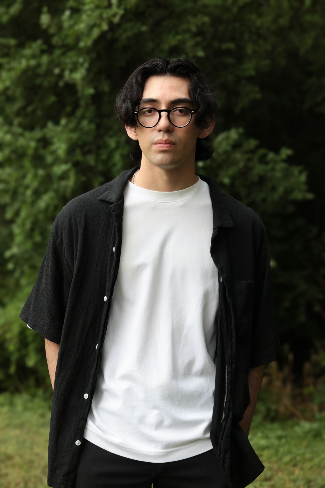

I'm a recent DePaul Post-Production alumni with a passion for editing that builds empathy.
I believe the best post-production stays true to the story's core. The essential question is: "what story are we telling, what techniques serve it best, and how do I deliver the emotion above all else?"
Growing up in diverse communities shaped my interest in unconventional stories about people and places that don't receive enough coverage. I'm seeking work that simultaneously challenges me as an editor and expands the conversations we're having on screen.
I believe the best post-production stays true to the story's core. The essential question is: "what story are we telling, what techniques serve it best, and how do I deliver the emotion above all else?"
Growing up in diverse communities shaped my interest in unconventional stories about people and places that don't receive enough coverage. I'm seeking work that simultaneously challenges me as an editor and expands the conversations we're having on screen.

Photo by Dalia Guadalupe Mendez